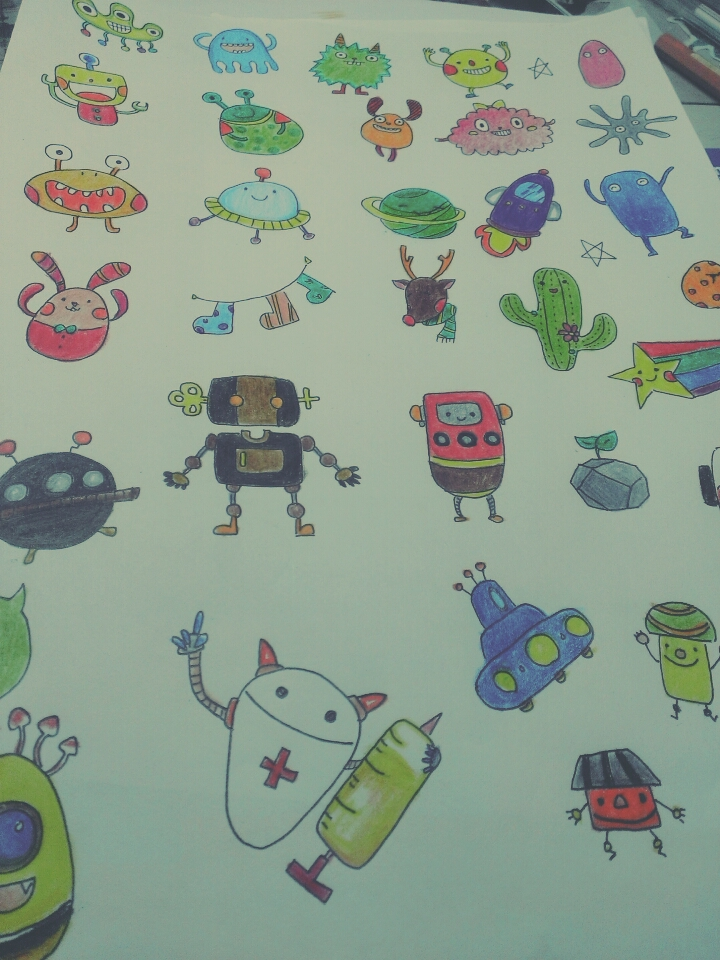

個人簡介
姓名：鍾家蓉
生日：1996/10/31
星座：天蠍座
學歷
目前就讀：國立國際暨南大學資訊管理學系
經歷
隊輔:飢餓30DIY體驗營，新生迎新宿營
營隊:北醫牙醫暑期營，開南大學英語營，中央資訊管理暑期營
現任資管系學會會長
興趣
喜歡畫畫，比較拿手的是鉛筆、色鉛筆跟水彩，小時候學過一點，但後來都是自己有空時練練，現在倒沒什麼時間畫了哈哈
做手作，喜歡縫縫補補一些小東西，娃娃、手環、吊飾，上網follow一些文創家的作品，如果你也喜歡可以跟你分享，我很喜歡寫手帳哈哈，有在收集紙膠帶喔！
對攝影有興趣 ，偶爾喜歡用photoshop、Illustrator修修圖排排版，不過都還很弱就是了
滿喜歡看美劇的，不愛看韓劇，雖然朋友都會一直推薦我看，但越推我越不看哈哈 歡迎推薦美劇ＸＤ
手作或手繪吧，哈哈哈雖然沒有很厲害，不過很適合閒閒沒事打發時間喔
|  | ||
 |
推薦網站
MyInstagram暨大資管系學會粉專
Voicetube